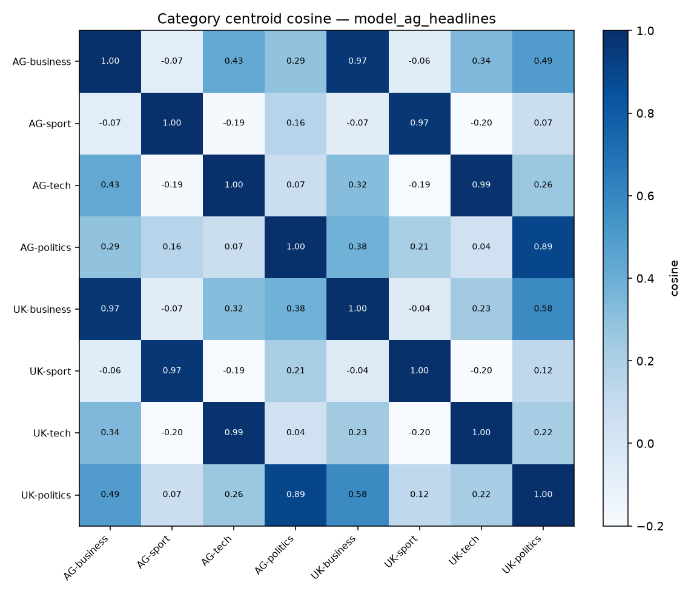
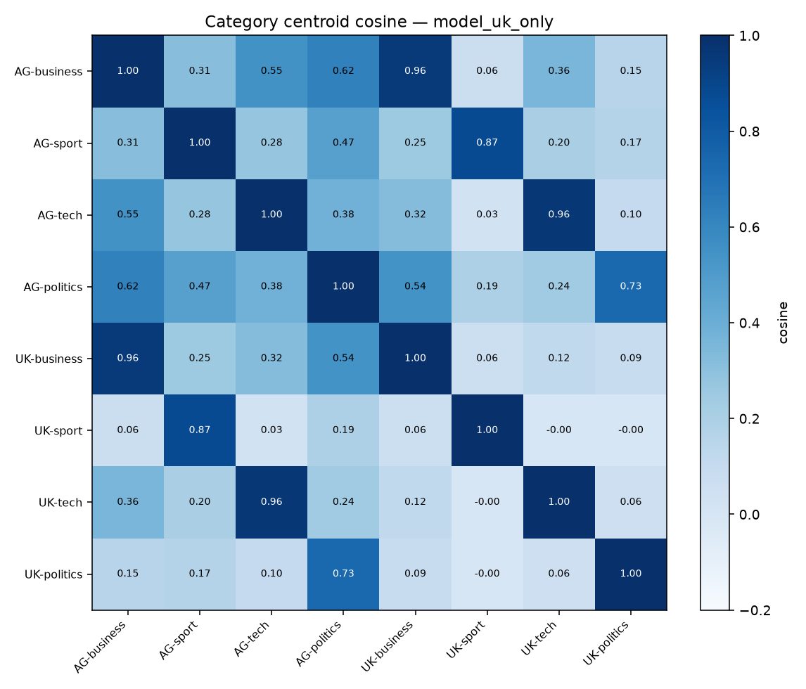

Cambridge 2026 · UK headlines · MPS
Embedding similarity
How close AG and UK headlines sit in DistilBERT space — comparing the AG-only checkpoint with the UK-only checkpoint (not AG→UK transfer).
Category centroid cosines
25 headlines per label from AG train and UK (n = 200, seed 42). CLS embeddings from AG-only and UK-only DistilBERT; cells are cosine similarity of L2-normalized category centroids.


| Label | AG model | UK-only model |
|---|---|---|
| business | 0.9660 | 0.9558 |
| sport | 0.9654 | 0.8738 |
| tech | 0.9857 | 0.9644 |
| politics | 0.8928 | 0.7344 |
| Mean same-label | 0.9525 | 0.8821 |
| Mean different-label | 0.1332 | 0.2176 |
Values are cosine(AG-label, UK-label). AG-only keeps same-topic AG/UK centroids closer (and different topics farther) than UK-only.